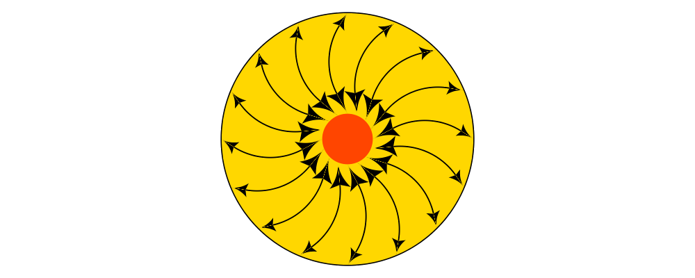

Arrows come in many shapes and sizes and diagrams provides a wide
variety of flexible and extensible tools for creating and using
arrows. The diagram below gives a small taste of some of the different
arrows that can be created easily with diagrams. The
Diagrams.TwoD.Arrow module, along with
Diagrams.TwD.Arrowheads, provides a collection of functions and
options used to make arrows.
Most of the arrow functions take a record argument of optional
parameters (see Faking optional named parameters) of type
ArrowOpts. These functions typically have a companion function that
does not take an options record, and uses a default set of
ArrowOpts. For example, arrow' takes an options record parameter,
and arrow does not. In this tutorial, whenever we mention a function
with a single quote (') at the end, note there is also a companion
function without the quote that uses a default set of options.
Arrowheads and -tails are the canonical example of scale invariant
objects: they are not affected by scaling (though they are affected by
other transformations such as rotation and translation). The
scale-invariance section of the user manual has a good example
showing why scale-invariance is necessary for the creation of
arrowheads; detailed documentation explaining scale invariant objects
is in Diagrams.TwoD.Transform.ScaleInv. It turns out that this
module is no longer used internally for the creation of arrowheads, the
technical details of how arrows are actually created is beyond the scope
of this tutorial. The most important
consequence for day-to-day diagramming with arrows is that only the length of
arrowheads and -tails contribute to the envelope of an arrow (the width does not). This is analogous
to the way line width does not contribute to the envelope of a line.
Only the length of arrowheads and tails contribute to the envelope of an arrow!
The default length of an arrow head is normalized 0.035 which
scales with the size of the diagram. Since the diagrams in this
tutorial are relatively small and we want to highlight the arrows,
we often set the head length and tail length to a larger size.
This is accomplished using the options headLength and
tailLength and the lengths traversal which will be explained
in the Lengths and Gaps section.
A typical use case for an arrow is to connect two points, having an
arrow pointing from one to the other. The function arrowBetween (and
its cousin arrowBetween') connects two points.
> sPt = p2 (0.20, 0.20)
> ePt = p2 (2.85, 0.85)
>
> -- We use small blue and red circles to mark the start and end points.
> spot = circle 0.02 # lw none
> sDot = spot # fc blue # moveTo sPt
> eDot = spot # fc red # moveTo ePt
>
> example = ( sDot <> eDot <> arrowBetween' (with & headLength .~ veryLarge) sPt ePt)
> # centerXY # pad 1.11. Create a diagram which contains a circle of radius 1 with an arrow connecting the points on the circumference at 45 degrees and 180 degrees.
All of the arrow creation functions have a primed variant (e.g.
arrowBetween and arrowBetween') which takes an additional opts
parameter of type ArrowOpts. The opts record is the primary means
of customizing the look of the arrow. It contains a substantial
collection of options to control all of the aspects of an arrow. Here
is the definition for reference:
> data ArrowOpts n = ArrowOpts
> { _arrowHead :: ArrowHT n
> , _arrowTail :: ArrowHT n
> , _arrowShaft :: Trail V2 n
> , _headGap :: Measure n
> , _tailGap :: Measure n
> , _headStyle :: Style V2 n
> , _headLength :: Measure n
> , _tailStyle :: Style V2 n
> , _tailLength :: Measure V2 n
> , _shaftStyle :: Style V2 n
> }Don't worry if some of the field types in this record are not yet clear, we will walk through each field and occasionally point to the API reference for material that we don't cover in this tutorial.
The arrowHead and arrowTail fields contain information needed to
construct the head and tail of the arrow, the most important aspect
being the shape. So, for example, if we set arrowHead to spike and
arrowTail to quill,
> arrowBetween' (with & arrowHead .~ spike
> & arrowTail .~ quill
> & lengths .~ veryLarge)
> sPt ePtthen the arrow from the previous example looks like this:
The Arrowheads module exports a number of standard arrowheads
including tri, dart, spike, thorn, dart, lineHead, and noHead,
with dart being
the default. Also available are companion functions like arrowheadDart
that allow finer control over the shape of a dart style head. For tails,
in addition to quill are block, lineTail, and noTail. Again for more control
are functions like, arrowtailQuill. Finally, any of the standard arrowheads
can be used as tails by appending a single quote, so for example:
> arrowBetween' (with & arrowHead .~ thorn & arrowTail .~ thorn'
> & lengths .~ veryLarge) sPt ePtyields:
The shaft of an arrow can be any arbitrary Trail V2 n in addition to a
simple straight line. For example, an arc makes a perfectly good
shaft. The length of the trail is irrelevant, as the arrow is scaled
to connect the starting point and ending point regardless of the
length of the shaft. Modifying our example with the following code
will make the arrow shaft into an arc:
> shaft = arc xDir (1/2 @@ turn)
>
> example = ( sDot <> eDot
> <> arrowBetween' (with & arrowHead .~ spike & arrowTail .~ spike'
> & arrowShaft .~ shaft
> & lengths .~ veryLarge) sPt ePt
> # frame 0.25Arrows with curved shafts don't always render the way our intuition
may lead us to expect. One could reasonably expect that the arc in the
above example would produce an arrow curving upwards, not the
downwards-curving one we see. To understand what's going on, imagine
that the arc is Located. Suppose the arc goes from the point
\((0,0)\) to \((-1,0)\). This is indeed an upwards curving arc
with origin at \((0,0)\). Now suppose we want to connect points
\((0,0)\) and \((1,0)\). We attach the arrow head and tail and
rotate the arrow about its origin at \((0,0)\) until the tip of
the head is touching \((1,0)\). This rotation flips the arrow
vertically. To make an arc that runs clockwise from its starting
point, use a negative Angle.
> shaft = arc xDir (-1/2 @@ turn)If an arrow shaft does not appear as you expect, then try using
reverseTrail, or in the case of arcs, multiplying the angle by -1.
Here are some exercises to try.
Construct each of the following arrows pointing from \((1,1)\) to \((3,3)\) inside a square with side \(4\).
A straight arrow with no head and a spike shaped tail.
An arrow with a \(45\) degree arc for a shaft, triangles for both head and tail, curving downwards.
The same as above, only now make it curve upwards.
The fields headLength and tailLength are for setting the length of
the head and tail. The head length is measured from the tip of the
head to the start of the joint connecting the head to the shaft. The
tail length is measured in an analagous manner. They have type
Measure Double and the default is normal. headGap and tailGap
options are fairly self explanatory: they leave space at the end or
beginning of the arrow and are also of type Mesure Double; the
default is none. Take a look at their effect in the following
example:
> sPt = p2 (0.20, 0.50)
> mPt = p2 (1.50, 0.50)
> ePt = p2 (2.80, 0.50)
>
> spot = circle 0.02 # lw none
> sDot = spot # fc blue # moveTo sPt
> mDot = spot # fc green # moveTo mPt
> eDot = spot # fc red # moveTo ePt
>
>
> leftArrow = arrowBetween' (with & arrowHead .~ dart & arrowTail .~ tri'
> & headLength .~ large & tailLength .~ normal
> & headGap .~ large) sPt mPt
>
> rightArrow = arrowBetween' (with & arrowHead .~ spike & arrowTail .~ dart'
> & shaftStyle %~ lw ultraThick
> & tailLength .~ veryLarge & headLength .~ huge
> & tailGap .~ veryLarge) mPt ePt
>
> example = ( sDot <> mDot <> eDot <> leftArrow <> rightArrow)
> # frame 0.25Our use of the lens package allows us to create other lenses to
modify ArrowOpts using the same syntax as the record field
lenses. lengths is useful for setting the headLength and tailLength
simultaneously and gaps can be used to simultaneously set
the headGap / tailGap.
A useful pattern is to use lineTail together with lengths as in the
following example:
> dia = (rect 5 2 # fc lavender # alignX (-1) # showOrigin # named "A")
> === strutY 2 ===
> (rect 5 2 # fc pink # alignX (-1) # showOrigin # named "B")
>
> ushaft = trailFromVertices (map p2 [(0, 0), (-0.5, 0), (-0.5, 1), (0, 1)])
>
> uconnect tl setWd =
> connect' (with
> & arrowHead .~ spike
> & arrowShaft .~ ushaft
> & arrowTail .~ tl
> & setWd)
>
> example =
> hcat' (with & sep .~ 1.5)
> [ dia # uconnect noTail (headLength .~ veryLarge) "B" "A" -- looks bad
> , dia # uconnect lineTail (lengths .~ veryLarge) "B" "A" -- looks good!
> ]
> # frame 0.25By default, arrows are drawn using the current line color (including the head and tail). In addition, the shaft styling is taken from the current line styling attributes. For example:
> example = mconcat
> [ square 2
> , arrowAt' (with & headLength .~ veryLarge) origin unitX
> # lc blue # lw thick
> ]
> # dashingG [0.05, 0.05] 0The colors (or more generally textues) of the head, tail, and shaft
may be individually overridden using headTexture, tailTexture, and
shaftTexture in conjunction with the solid function. More generally, the
styles are controlled using headStyle, tailStyle, and shaftStyle. For
example:
> dashedArrow = arrowBetween' (with & arrowHead .~ dart & arrowTail .~ spike' & lengths .~ veryLarge
> & headTexture .~ solid blue & tailTexture .~ solid orange
> & shaftStyle %~ dashingG [0.04, 0.02] 0
> . lw thick) sPt ePt
>Note that when setting a style, one must generally use the %~
operator in order to apply something like dashingG [0.04, 0.02] 0
which is a function that changes the style.
By default, the ambient line color is used for the head, tail, and shaft of an arrow. However, when setting the styles individually, the fill color should be used for the head and tail, and line color for the shaft.
Sometimes we prefer to specify a starting point and vector from which the arrow
takes its magnitude and direction. The arrowAt' and
arrowAt functions are useful in this regard. The example below demonstrates
how we might create a vector field using the arrowAt' function.
> locs = [(x, y) | x <- [0.1, 0.3 .. 3.25], y <- [0.1, 0.3 .. 3.25]]
>
> -- create a list of points where the vectors will be place.
> points = map p2 locs
>
> -- The function to use to create the vector field.
> vectorField (x, y) = r2 (sin (y + 1), sin (x + 1))
>
> arrows = map arrowAtPoint locs
>
> arrowAtPoint (x, y) = arrowAt' opts (p2 (x, y)) (sL *^ vf) # alignTL
> where
> vf = vectorField (x, y)
> m = norm $ vectorField (x, y)
>
> -- Head size is a function of the length of the vector
> -- as are tail size and shaft length.
> hs = 0.08 * m
> sW = 0.015 * m
> sL = 0.01 + 0.1 * m
> opts = (with & arrowHead .~ tri & headLength .~ global hs & shaftStyle %~ lwG sW)
>
> field = position $ zip points arrows
> example = ( field # translateY 0.05
> <> ( square 3.5 # fc whitesmoke # lwG 0.02 # alignBL))
> # scaleX 2Your turn:
Try using the above code to plot some other interesting vector fields.
The workhorse of the Arrow package is the connect'
function. connect' takes an options record and the names of two
diagrams, and places an arrow starting at the origin of the first
diagram and ending at the origin of the second (unless gaps are
specified).
> s = square 2 # showOrigin # lw thick
> ds = (s # named "1") ||| strutX 3 ||| (s # named "2")
> t = cubicSpline False (map p2 [(0, 0), (1, 0), (1, 0.2), (2, 0.2)])
>
> example = ds # connect' (with & arrowHead .~ dart & lengths .~ veryLarge
> & arrowTail .~ dart'
> & shaftStyle %~ lw thick & arrowShaft .~ t) "1" "2"It is often convenient to be able to connect the points on the Trace
of diagrams with arrows. The connectPerim' and connectOutside'
functions are used for this purpose. We pass connectPerim two names
and two angles. The angles are used to determine points on the traces
of the two diagrams, determined by shooting a ray from the local
origin of each diagram in the direction of the given angle. The
generated arrow stretches between these two points. Note that if the
names are the same then the arrow connects two points on the same
diagram.
In the case of connectOutside, the arrow lies on the line between
the centers of the diagrams, but is drawn so that it stops at the
boundaries of the diagrams, using traces to find the intersection
points.
> connectOutside "diagram1" "diagram2"
> connectPerim "diagram" "diagram" (2/12 @@ turn) (4/12 @@ turn)Here is an example of a finite state automata that accepts real numbers. The code is a bit longer than what we have seen so far, but still very straightforward.
> text' font d s = (strokeP $ textSVG' (TextOpts font INSIDE_H KERN False d d) s)
> # lw none # fc black
>
> stateLabel font = text' font 6
> arrowLabel font txt size = text' font size txt
>
> state = circle 4 # fc silver
> fState = circle 3.7 # fc lightblue <> state
>
> points = map p2 [ (0, 12), (12, 16), (24, 12), (24, 21), (36, 16), (48, 12)
> , (48, 21), (12, 0), (7, 7), (24, 4), (36, 0), (46, 0)]
>
> ds f = [ (stateLabel f "1" <> state) # named "1"
> , arrowLabel f "0-9" 4
> , (stateLabel f "2" <> state) # named "2"
> , arrowLabel f "0-9" 4
> , arrowLabel f "." 8
> , (stateLabel f "3" <> fState) # named "3"
> , arrowLabel f "0-9" 4
> , (stateLabel f "4" <> state) # named "4"
> , arrowLabel f "." 8
> , arrowLabel f "0-9" 4
> , (stateLabel f "5" <> fState) # named "5"
> , arrowLabel f "0-9" 4]
>
> states f = position (zip points (ds f))
>
> shaft = arc xDir (-1/6 @@ turn)
> shaft' = arc xDir (-2.7/5 @@ turn)
> line = trailFromOffsets [unitX]
>
> arrowStyle1 = (with & arrowHead .~ spike & headLength .~ normal
> & arrowShaft .~ shaft)
>
> arrowStyle2 = (with & arrowHead .~ spike
> & arrowShaft .~ shaft' & arrowTail .~ lineTail
> & tailTexture .~ solid black & lengths .~ normal)
>
> arrowStyle3 = (with & arrowHead .~ spike & headLength .~ normal
> & arrowShaft .~ line)
>
> example = do
> font <- lin2
> return $ states font
> # connectOutside' arrowStyle1 "1" "2"
> # connectOutside' arrowStyle3 "1" "4"
> # connectPerim' arrowStyle2 "2" "2" (4/12 @@ turn) (2/12 @@ turn)
> # connectOutside' arrowStyle1 "2" "3"
> # connectPerim' arrowStyle2 "3" "3" (4/12 @@ turn) (2/12 @@ turn)
> # connectOutside' arrowStyle1 "4" "5"
> # connectPerim' arrowStyle2 "5" "5" (1/12 @@ turn) (-1/12 @@ turn)In the following exercise you can try connectPerim' for yourself.
Create a torus (donut) with \(16\) curved arrows pointing from the
outer ring to the inner ring at the same angle every 1/16 @@ turn.
